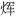

惜 分 飞
毛 滂
富阳僧舍作别语赠妓琼芳①
泪湿阑干花着露② ，愁到眉峰碧聚。此恨平分取，更无言语空相觑③ 。 断雨残云无意绪，寂寞朝朝暮暮。今夜山深处，断魂分付潮回去。
【注释】
①彊村丛书本《东堂词》题作“富阳僧舍代作别语”。 ②阑干：纵横的样子。 ③觑：细看。
【语译】
你泪流纵横，就像一朵鲜花沾着露水，愁容使你远山似的黛眉紧锁在一起。别离之恨你我都分得了一半，再也说不出一句话来，彼此只是默默地凝视着对方。
云雨梦残了，对什么都没有情绪，此后只有寂寞伴着度过朝朝暮暮。今夜，我在富阳深山的僧舍里，将我无所依托的梦魂交付给退去的江潮，让它随潮水回到你所在的钱塘。
【赏析】
周

《清波杂志》云：“毛泽民元祐间罢杭州法曹至富阳所作赠别词也。”词题一本多了一个“代”字，且无“赠妓琼芳”字样。赠别的对象是妓女，从词中用巫山神女典故看，当无可疑；至于是自己赠别还是代替他人作别语，就词的内容而言都一样，我们只须论其优劣就可以了。上片回想别时情景。“泪湿”句的取喻多受前人诗意象的启发。如“林花着雨胭脂湿”、“玉容寂寞泪阑干，梨花一枝春带雨”之类皆是。愁蹙双眉，以碧峰相聚作比，典出《西京杂记》（卓文君）“眉色如望远山”，后已成常语。这两句是所见的对方情态，必定也得说到自己才情真意切。“此恨平分取”五字转得好，意谓你的痛苦我完全理解，因为我心里也有同样的感受。多情反似无情，不能有一语相慰，彼此唯泪眼“相觑”，加一“空”字，写别离之恨，不减柳永《雨霖铃》“执手相看”两句。这两句把对方和自己都写在一起了。
下片写别后事。说“无意绪”，说“寂寞”，也都可包括双方；是现时也是可预料的日后的心情。用“断云残雨”四字，把对方的身份、跟自己的关系，以及别后的处境，都暗示出来了。“朝朝暮暮”也恰巧借用了典故中的成语，所谓“旦为行云，暮为行雨；朝朝暮暮，阳台之下”（宋玉《高唐赋序》）。末以魂逐潮回作结，是未经人说过的话。“山深处”，正扣住词题中的“富阳僧舍”。杭城之东南枕着钱塘江，其上游称富春江，富阳临其北岸；钱塘以江潮闻名，潮回落时，富阳之水正好流向杭州。因地设词，自然新奇，极有情致。